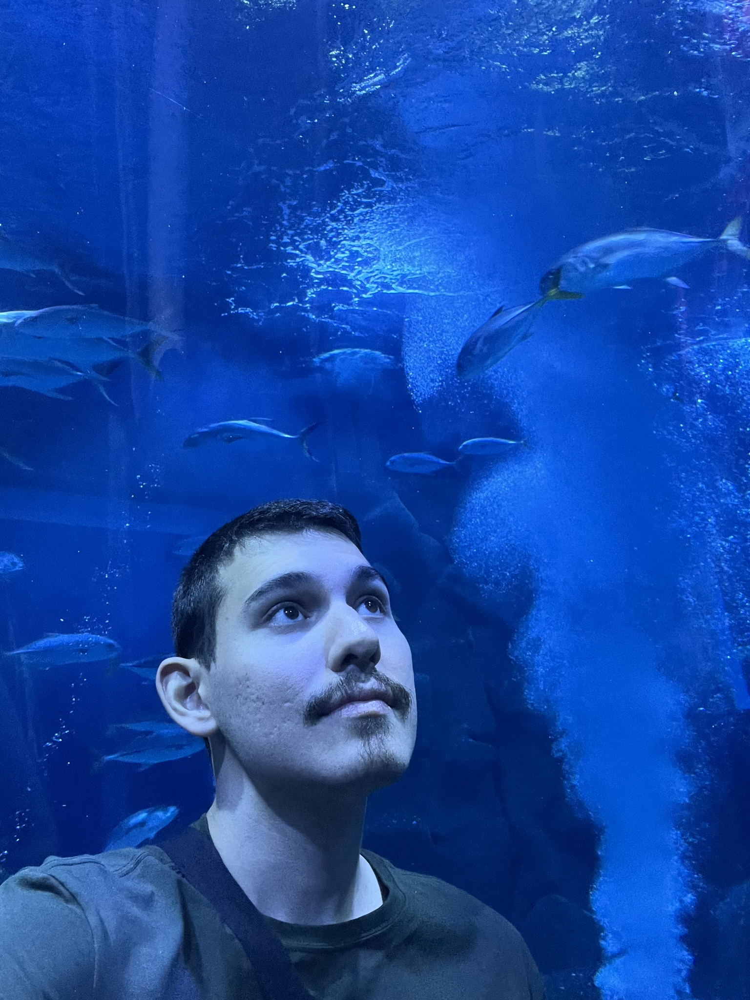

Olá, eu sou
Fernando Kendi
Analista de Sistemas / SQL Developer
Surdo, usuário nativo de LIBRAS e paulista.
PERFIL
Analista de Sistemas e SQL Developer. Como usuário nativo de LIBRAS, tenho uma forte percepção visual e gosto de manter as coisas organizadas, analisar tudo com atenção aos detalhes e entender as necessidades das pessoas.
- LOCAL
- São Paulo, Brasil
- IDIOMA
- LIBRAS · Português · Inglês básico
- ÁREA
- Análise de Sistemas · Desenvolvimento SQL · Front-end
Gosto de pesquisar e conhecer mais sobre História, que é um dos meus principais hobbies. Também curto viajar para conhecer lugares diferentes e aproveitar momentos de tranquilidade. Gosto de andar de bicicleta no parque nos fins de semana. Sou apaixonado por videogames, principalmente no Nintendo, e não dispenso um bom café.
SKILLS
PROJETOS
CONTATO
Aberto a oportunidades como Analista de Sistemas e SQL Developer. Prefiro contato por texto ou vídeo em LIBRAS.